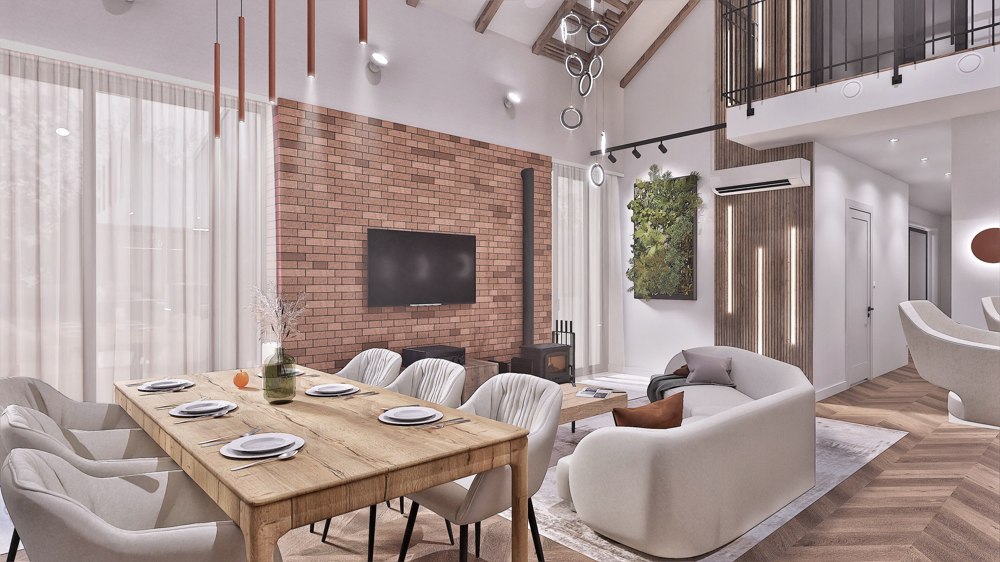
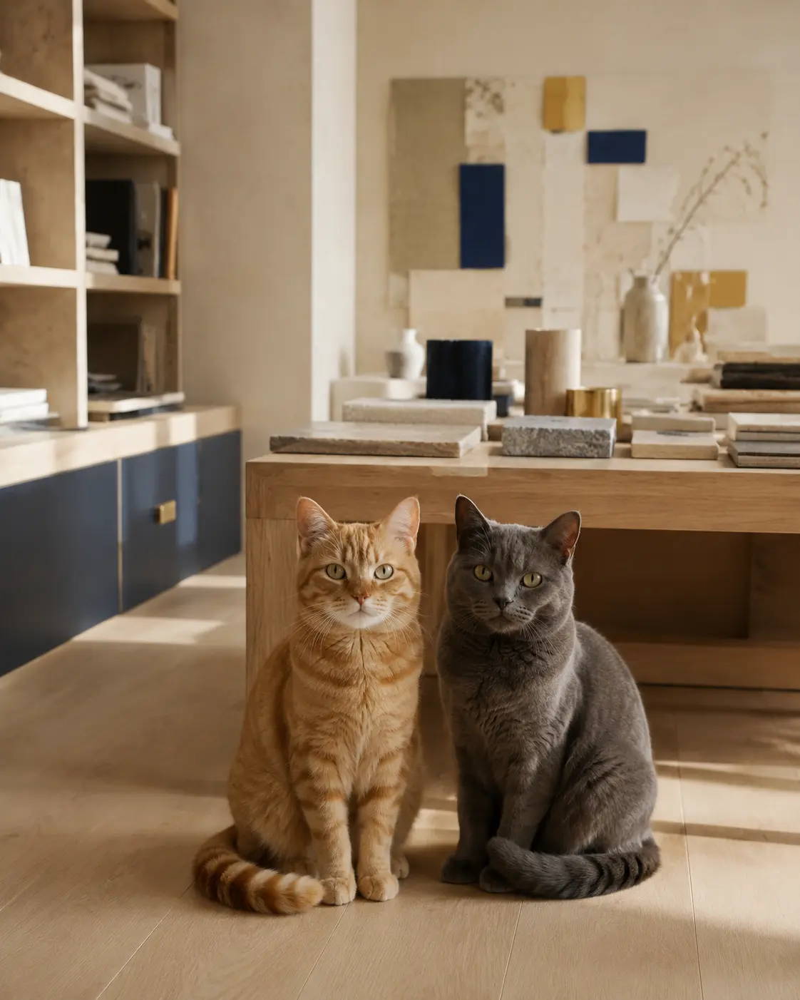

Projekt koncepcyjny

To Oni Projektują / Gliwice
Projektujemy
wnętrza, które
działają.
Wnętrza budujemy wokół ludzi — ich potrzeb, codzienności i charakteru.

O nas
To Oni Projektują
Najpierw poznajemy człowieka, dopiero później projektujemy wnętrze.
Jesteśmy To Oni Projektują — pracownią architektury wnętrz z siedzibą w Gliwicach, założoną przez Oliwię Brust i Jakuba Koprianiuka, absolwentów kierunku Architektura Wnętrz na Politechnice Śląskiej.
Projektujemy wnętrza, które odpowiadają na potrzeby ich użytkowników. Łączą estetykę z funkcjonalnością i ponadczasowymi rozwiązaniami. Nie opieramy się na gotowych schematach — analizujemy potrzeby i tworzymy przestrzenie dopasowane do konkretnych ludzi.
Realizujemy projekty na terenie całej Polski, stacjonarnie, zdalnie lub hybrydowo, zachowując ten sam poziom zaangażowania niezależnie od lokalizacji Inwestycji.
Realizacje
Nasze projekty
Oferta
Pakiety projektowe
Wszystkie projekty wyceniamy indywidualnie.
Nie wiesz, który pakiet wybrać? Skontaktuj się z nami — pomożemy dobrać zakres do Twoich oczekiwań.
IPakiet IKonsultacja projektowa
Analiza lokalu i planów Inwestycyjnych przed rozpoczęciem właściwego projektu.
Rozwiń zakres +
Pakiet obejmuje
- Analizę lokalu
- Analizę planów Inwestycyjnych
- Zalecenia i wskazówki projektowe
Usługa pomaga w wyborze lokalu lub rozwiązań projektowych. Podczas spotkania analizujemy zalety, ograniczenia i możliwości tak, aby przyszła Inwestycja możliwie najlepiej odpowiadała oczekiwaniom klienta.
IIPakiet IIBasic — Funkcja
Funkcja, ergonomia i wygoda — punkt wyjścia dla każdej Inwestycji.
Rozwiń zakres +
Pakiet obejmuje
- Rzut układu funkcjonalnego
- Analizę rozwiązań projektowych
- Konsultacje online
- 2 korekty układu
Podstawowy zakres skupiony na prawidłowym funkcjonowaniu wnętrza, ergonomii i komunikacji. Rzuty powstają na podstawie potrzeb i wytycznych Inwestora.
IIIPakiet IIIStandard — Forma
Funkcja uzupełniona o materiały, model 3D i docelowy charakter wnętrza.
Rozwiń zakres +
Pakiet obejmuje
- Elementy pakietu Basic
- Dobór materiałów wykończeniowych
- Model 3D i rozwiązania estetyczne
- Wizualizacje 3D
- Zestawienie materiałów
- Konsultacje online
- 2 korekty według wytycznych
Najpopularniejsza opcja — rozwija funkcję o warstwę wizualną i konkretny dobór materiałów. Założenia omawiamy na spotkaniach i prezentujemy na modelu 3D.
IVPakiet IVPakiet TOP
Pełny zakres projektu z dokumentacją techniczną i wsparciem realizacji.
Rozwiń zakres +
Pakiet obejmuje
- Elementy pakietów Basic i Standard
- Dokumentację wykonawczą 2D
- Schematy instalacji
- Weryfikację wykonalności rozwiązań
- Kosztorys projektowy
- Oferty zakupowe
- Wsparcie Architekta podczas realizacji
Najpełniejszy wariant. Dokumentacja jest konsultowana z wykonawcami, a Architekt wspiera Inwestora od projektu do zakończenia realizacji.
Każda Inwestycja ma inny zakres.
Wycena powstaje po krótkiej rozmowie i poznaniu potrzeb.
Proces inwestycyjnyTo Oni
Każdy etap ma konkretny cel.
Wybierz etap, aby zobaczyć, co dzieje się w danym momencie i jaki rezultat otrzymuje Inwestor.
0106
01
Analizujemy uwarunkowania techniczne, zasady ergonomii, potrzeby użytkowników i możliwości lokalu. To etap, który pozwala wybrać pewny kierunek dalszej pracy.
Rezultat: pewny kierunek dalszej pracy lub wyboru Inwestycji.Dokładny pomiar ścian, otworów, przyłączy i instalacji pozwala oprzeć projekt na wiarygodnej dokumentacji. Przygotowujemy rzuty 2D i dokumentację fotograficzną.
Rezultat: klarowna i kompletna dokumentacja stanu istniejącego.Określamy podział przestrzeni, strefy funkcjonalne, komunikację i rozmieszczenie wyposażenia. Weryfikujemy rozwiązania zanim przejdziemy do szczegółów.
Rezultat: rzuty 2D definiujące organizację przestrzeni.Pracujemy nad bryłami 3D, materiałami i charakterem przestrzeni. Dobory konsultujemy z Inwestorem, a etap zamykamy fotorealistycznymi wizualizacjami 3D.
Rezultat: uzgodniona koncepcja materiałowa i wizualizacje 3D.Tworzymy komplet rysunków technicznych, schematów instalacji, układów materiałów i zabudów. Rozwiązania konsultujemy z branżystami i wykonawcami.
Rezultat: kompletna dokumentacja stanowiąca podstawę realizacji.Cyklicznie odwiedzamy budowę, weryfikujemy zgodność prac z projektem i odpowiadamy na pytania wykonawców. Liczbę wizyt ustalamy indywidualnie.
Rezultat: realizacja zgodna z dokumentacją projektową.i nasze odpowiedzi
Wasze najczęściej zadawane pytania
Jak wygląda pierwszy kontakt?
Zazwyczaj zaczynamy od rozmowy telefonicznej. Zachęcamy też do przedprojektowego spotkania online, podczas którego omawiamy plany Inwestycji i pokazujemy, w jaki sposób pracujemy.
Czy zakres można dopasować?
Tak. Oferty przygotowujemy indywidualnie pod każdą Inwestycję i możemy dobrać zakres do potrzeb, budżetu oraz etapu prac.
Ile czasu trwa projekt?
Dla lokalu mieszkalnego około 70 m² orientacyjnie: układ funkcjonalny 7–10 dni roboczych, projekt koncepcyjny 20–30 dni, projekt wykonawczy 30–40 dni. Termin zależy od zakresu, liczby korekt i stopnia skomplikowania.
Czy posiadacie własnych wykonawców?
Tak. Współpracujemy z firmami i fachowcami zajmującymi się zarówno kompleksowym wykończeniem wnętrz, jak i poszczególnymi etapami realizacji.
Czy inwentaryzacja jest mi potrzebna?
Zależy od obiektu i dokumentacji, ale z doświadczenia zawsze ją zalecamy. Daje pewność wymiarową i pozwala wcześnie wychwycić rozbieżności lub błędy wykonawcze.
W jakim stylu specjalizuje się Wasze biuro?
Nie przypisujemy się do jednego stylu. Projektujemy pod oczekiwania i charakter Inwestorów, szukając indywidualnych rozwiązań zamiast kopiowania trendów.
Ile poprawek jest wliczonych w cenę projektu?
W Układzie Funkcjonalnym i Projekcie Koncepcyjnym uwzględniamy po 2 korekty na etap. Dopuszczamy też niewielkie zmiany kolorystyki wizualizacji 3D.
Jak wygląda komunikacja podczas projektu?
Ustalamy spotkania online i regularnie omawiamy postępy. W razie dodatkowych pytań pozostajemy w kontakcie telefonicznym i na bieżąco informujemy o przebiegu prac.
Czy projekt można dostosować do określonego budżetu?
Tak. Budżet jest jedną z kluczowych informacji wejściowych i uwzględniamy go przy doborze materiałów, rozwiązań i zakresu projektu.
Jak uniknąć błędów, których nie da się łatwo poprawić po remoncie?
Najważniejsze są kompletna dokumentacja, sprawdzeni wykonawcy i konsultowanie kluczowych decyzji przed rozpoczęciem prac. W razie potrzeby oferujemy także Nadzór Autorski.
Masz inne pytanie?
Skontaktuj się z namiKontakt
Opowiedz nam o miejscu, które chcesz zmienić.
Na początek wystarczy lokalizacja, metraż, termin i krótki opis Inwestycji.
Nowa inwestycja
Zacznijmy od konkretów
GliwiceTu pracujemy, ale projektujemy w całej Polsce.